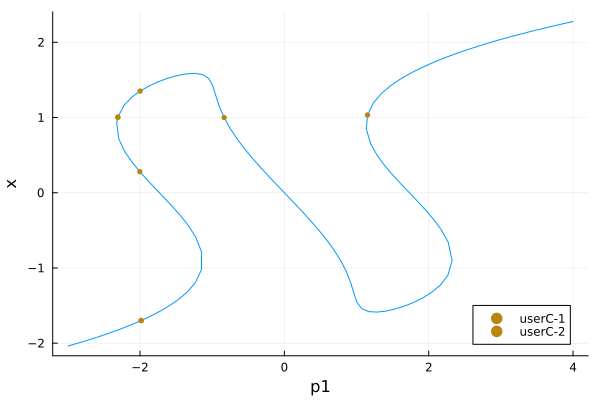
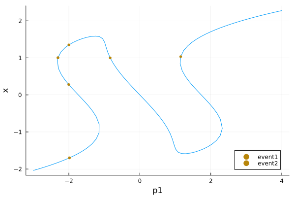
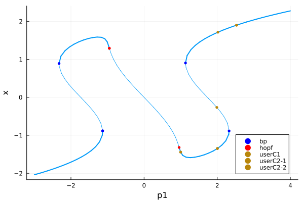

Event Handling
BifurcationKit.jl allows the detection of events along the branch of solutions. Its main use consists in detecting bifurcation points but they can be used and combined together by the user too.
The events are detected during a call to br = continuation(prob, alg, contParams::ContinuationPar;kwargs...) by turning on the following flag(s):
contParams.detect_event = 1
The event points are located by looking at the function defining the event (see below). The located event points are then returned in br.specialpoint.
Precise detection of event points using bisection
Note that the event points detected when detect_event = 1 are only approximate event points. Indeed, we only signal that, in between two continuation steps which can be large, a (several) event point has been detected. Hence, we only have a rough idea of where the event is located, unless your ContinuationPar().dsmax is very small... This can be improved as follows.
If you choose detect_event = 2, a bisection algorithm is used to locate the event points more precisely. It means that we recursively track down the event. Some options in ContinuationPar control this behavior:
n_inversion: number of sign inversions in the bisection algorithmmax_bisection_stepsmaximum number of bisection stepstol_param_bisection_eventtolerance on parameter to locate event
Different event types
The set of possible events DiscreteEvent, ContinuousEvent, SetOfEvents, PairOfEvents is detailed in the Library.
SaveAtEvent(positions::NTuple; use_newton = false): this is a continuous event which detects when the continuation parameter takes one of the values inpositions. The corresponding states are then saved in the branch. For examplecontinuation(args...; event = SaveAtEvent((1., 2., -3.))). Ifuse_newton = true, a Newton algorithm is used to converge to the event point, which increases the precision of the located event.FoldDetectEvent: this continuous event implements the detection of Fold points based on thep-component of the tangent vector to the continuation curve. It is designed to work withPALC(tangent = Bordered())as continuation algorithm. Use it ascontinuation(args...; event = FoldDetectEvent).BifDetectEvent: this discrete event implements the detection of bifurcation points along a continuation curve. The detection is based on monitoring the number of unstable eigenvalues; it thus requires the computation of the eigen elements. Use it ascontinuation(args...; event = BifDetectEvent), in particular when you setdetect_bifurcation = 0to focus on your own events but still want to record bifurcations.
These events can of course be combined with SetOfEvents / PairOfEvents, see below.
Examples
We show how to use the different events. We first set up a problem as usual.
using Revise, BifurcationKitusing Plotsconst BK = BifurcationKit##################################################################################################### test vector field for event detectionfunction Feve(X, p) p1, p2, k = p x, y = X out = similar(X) out[1] = p1 + x - y - x^k/k out[2] = p1 + y + x - 2y^k/k outend# parameters for the vector fieldpar = (p1 = -3., p2 = -3., k = 3)# bifurcation problemprob = ODEBifProblem(Feve, -2ones(2), par, (@optic _.p1); record_from_solution = (x, p; k...) -> x[1])# parameters for the continuationopts = ContinuationPar(max_steps = 150, p_min = -3., p_max = 4.0, # we disable bifurcation detection to focus # on the user passed events detect_bifurcation = 0, detect_fold = false, # parameters specific to event detection detect_event = 2)# arguments for continuationargs = (prob, PALC(), opts)kwargs = (plot = false, verbosity = 0,)Example of continuous event
In this first example, we build an event to detect when the parameter value is -2 or when the first component of the solution is 1.
br = continuation(args...; kwargs..., event = BK.ContinuousEvent(2, (iter, state) -> (getp(state)+2, getx(state)[1]-1)),)nothing #hidegives
br ┌─ Curve type: EquilibriumCont
├─ Number of points: 115
├─ Type of vectors: Vector{Float64}
├─ Parameter p1 starts at -3.0, ends at 4.0
├─ Algo: PALC [Secant]
└─ Special points:
- # 1, userC-1 at p1 ≈ -1.98380428 ∈ (-2.00059057, -1.98380428), |δp|=2e-02, [converged], δ = ( 0, 0), step = 12
- # 2, userC-1 at p1 ≈ -2.00301167 ∈ (-2.00301167, -1.99953208), |δp|=3e-03, [converged], δ = ( 0, 0), step = 28
- # 3, userC-2 at p1 ≈ -2.30722875 ∈ (-2.30888689, -2.30722875), |δp|=2e-03, [converged], δ = ( 0, 0), step = 33
- # 4, userC-1 at p1 ≈ -1.99895595 ∈ (-2.01435831, -1.99895595), |δp|=2e-02, [converged], δ = ( 0, 0), step = 36
- # 5, userC-2 at p1 ≈ -0.83478733 ∈ (-0.83598611, -0.83478733), |δp|=1e-03, [converged], δ = ( 0, 0), step = 48
- # 6, userC-2 at p1 ≈ +1.15208549 ∈ (+1.14075593, +1.15208549), |δp|=1e-02, [converged], δ = ( 0, 0), step = 92
- # 7, endpoint at p1 ≈ +4.00000000, step = 114
This shows for example that the first component of the event was detected userC-1 first. This yields
plot(br)
You can also name the events as follows
br = continuation(args...; kwargs..., event = BK.ContinuousEvent(2, (iter, state) -> (getp(state)+2, getx(state)[1]-1), ("event1", "event2")))nothing #hideAnd get:
br ┌─ Curve type: EquilibriumCont
├─ Number of points: 115
├─ Type of vectors: Vector{Float64}
├─ Parameter p1 starts at -3.0, ends at 4.0
├─ Algo: PALC [Secant]
└─ Special points:
- # 1, event1 at p1 ≈ -1.98380428 ∈ (-2.00059057, -1.98380428), |δp|=2e-02, [converged], δ = ( 0, 0), step = 12
- # 2, event1 at p1 ≈ -2.00301167 ∈ (-2.00301167, -1.99953208), |δp|=3e-03, [converged], δ = ( 0, 0), step = 28
- # 3, event2 at p1 ≈ -2.30722875 ∈ (-2.30888689, -2.30722875), |δp|=2e-03, [converged], δ = ( 0, 0), step = 33
- # 4, event1 at p1 ≈ -1.99895595 ∈ (-2.01435831, -1.99895595), |δp|=2e-02, [converged], δ = ( 0, 0), step = 36
- # 5, event2 at p1 ≈ -0.83478733 ∈ (-0.83598611, -0.83478733), |δp|=1e-03, [converged], δ = ( 0, 0), step = 48
- # 6, event2 at p1 ≈ +1.15208549 ∈ (+1.14075593, +1.15208549), |δp|=1e-02, [converged], δ = ( 0, 0), step = 92
- # 7, endpoint at p1 ≈ +4.00000000, step = 114
plot(br)
Example of discrete event
You can also use discrete events to detect a change. For example, the following detect when the parameter value equals -2:
br = continuation(args...; kwargs..., event = BK.DiscreteEvent(1, (iter, state) -> getp(state)>-2)) ┌─ Curve type: EquilibriumCont
├─ Number of points: 114
├─ Type of vectors: Vector{Float64}
├─ Parameter p1 starts at -3.0, ends at 4.0
├─ Algo: PALC [Secant]
└─ Special points:
- # 1, userD at p1 ≈ -1.98380428 ∈ (-2.00059057, -1.98380428), |δp|=2e-02, [converged], δ = ( 0, 0), step = 12
- # 2, userD at p1 ≈ -2.00301167 ∈ (-2.00301167, -1.99953208), |δp|=3e-03, [converged], δ = ( 0, 0), step = 28
- # 3, userD at p1 ≈ -1.99670519 ∈ (-2.00056478, -1.99670519), |δp|=4e-03, [converged], δ = ( 0, 0), step = 35
- # 4, endpoint at p1 ≈ +4.00000000, step = 113
Example of PairOfEvents event
Let us be a bit more creative and combine a continuous event with a discrete one:
br = continuation(args...; kwargs..., event = BK.PairOfEvents( BK.ContinuousEvent(1, (iter, state) -> getp(state)), BK.DiscreteEvent(1, (iter, state) -> getp(state)>-2))) ┌─ Curve type: EquilibriumCont
├─ Number of points: 114
├─ Type of vectors: Vector{Float64}
├─ Parameter p1 starts at -3.0, ends at 4.0
├─ Algo: PALC [Secant]
└─ Special points:
- # 1, userD at p1 ≈ -1.98380428 ∈ (-2.00059057, -1.98380428), |δp|=2e-02, [converged], δ = ( 0, 0), step = 12
- # 2, userD at p1 ≈ -2.00301167 ∈ (-2.00301167, -1.99953208), |δp|=3e-03, [converged], δ = ( 0, 0), step = 28
- # 3, userD at p1 ≈ -1.99670519 ∈ (-2.00056478, -1.99670519), |δp|=4e-03, [converged], δ = ( 0, 0), step = 35
- # 4, userC at p1 ≈ +0.01029312 ∈ (-0.00414058, +0.01029312), |δp|=1e-02, [converged], δ = ( 0, 0), step = 55
- # 5, endpoint at p1 ≈ +4.00000000, step = 113
Here userD-1 means that the first component of the discrete event was detected. Of course, you can name the event like done above.
Example of set of events
We can combine more events and chain them like we want using SetOfEvents. In this example, we show how to do bifurcation detection and event location altogether:
ev1 = BK.ContinuousEvent(1, (iter, state) -> getp(state)-1)ev2 = BK.ContinuousEvent(2, (iter, state) -> (getp(state)-2, getp(state)-2.5))# event to detect bifurcationev3 = BK.BifDetectEvent# we combine the events togethereve = BK.SetOfEvents(ev1, ev2, ev3)br = continuation(args...; kwargs..., event = eve) ┌─ Curve type: EquilibriumCont
├─ Number of points: 119
├─ Type of vectors: Vector{Float64}
├─ Parameter p1 starts at -3.0, ends at 4.0
├─ Algo: PALC [Secant]
└─ Special points:
- # 1, bp at p1 ≈ -1.13331997 ∈ (-1.13331997, -1.13288137), |δp|=4e-04, [converged], δ = ( 1, 0), step = 20
- # 2, bp at p1 ≈ -2.32501040 ∈ (-2.32501894, -2.32501040), |δp|=9e-06, [converged], δ = (-1, 0), step = 33
- # 3, hopf at p1 ≈ -0.95023978 ∈ (-0.95537606, -0.95023978), |δp|=5e-03, [converged], δ = ( 2, 2), step = 47
- # 4, hopf at p1 ≈ +0.95861227 ∈ (+0.94836964, +0.95861227), |δp|=1e-02, [converged], δ = (-2, -2), step = 67
- # 5, userC1 at p1 ≈ +1.00022630 ∈ (+0.99917369, +1.00022630), |δp|=1e-03, [ guess], δ = ( 0, 0), step = 69
- # 6, userC2-1 at p1 ≈ +2.00505485 ∈ (+1.98960876, +2.00505485), |δp|=2e-02, [converged], δ = ( 0, 0), step = 78
- # 7, bp at p1 ≈ +2.32505861 ∈ (+2.32488491, +2.32505861), |δp|=2e-04, [converged], δ = ( 1, 0), step = 82
- # 8, userC2-1 at p1 ≈ +1.99013752 ∈ (+1.99013752, +2.00407487), |δp|=1e-02, [converged], δ = ( 0, 0), step = 86
- # 9, bp at p1 ≈ +1.13286566 ∈ (+1.13286566, +1.13289073), |δp|=3e-05, [converged], δ = (-1, 0), step = 95
- # 10, userC2-1 at p1 ≈ +2.01959226 ∈ (+1.98599850, +2.01959226), |δp|=3e-02, [converged], δ = ( 0, 0), step = 103
- # 11, userC2-2 at p1 ≈ +2.52953492 ∈ (+2.49528467, +2.52953492), |δp|=3e-02, [converged], δ = ( 0, 0), step = 107
- # 12, endpoint at p1 ≈ +4.00000000, step = 118
Which gives
plot(br)